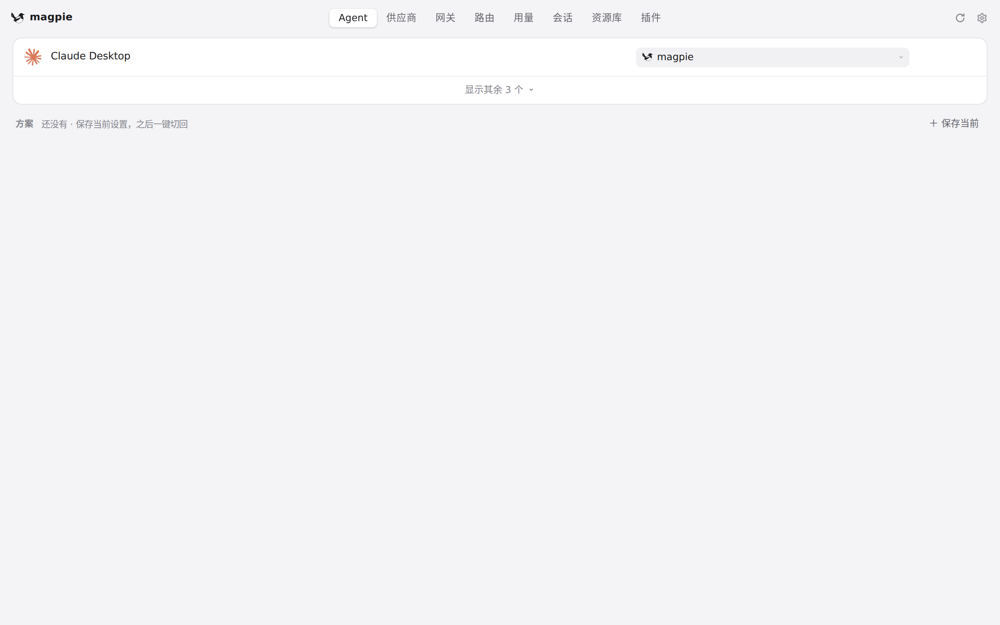
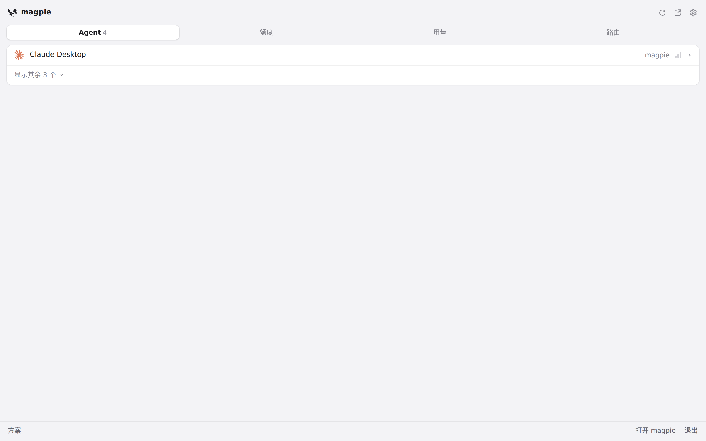

#623 界面预览
commit 454f4c5 · 回到 PR · 窗口加载后，如果终端里的 `magpie` 命令是拷贝来的文件（而不是安装脚本建立的指向 app 的链接），就弹出一个带「隐藏，直到下一个版本」和「OK」的对话框，标题为「终端里的 `magpie` 命令是一份拷贝」，正文点名该路径并说明它不会随应用更新；点「隐藏，直到下一个版本」会写下按版本记录的静默标记（POST /api/cli-behind/quiet）。快捷面板（mode=panel）刻意不弹这个提示。
红线是鼠标走过的轨迹，红色圆环是一次点击；底部文字是这一步在做什么。空格暂停，← → 逐段查看。
 窗口里的拷贝命令提示 · magpie 窗口刚加载完的界面（终端里的 magpie 命令是拷贝时，提示框盖在这里）
窗口里的拷贝命令提示 · magpie 窗口刚加载完的界面（终端里的 magpie 命令是拷贝时，提示框盖在这里）

窗口里的拷贝命令提示 · 窗口加载后的 agents 页：终端里的 magpie 是拷贝文件时，提示框会盖在这里

快捷面板不提示 · 菜单栏快捷面板刚打开的样子